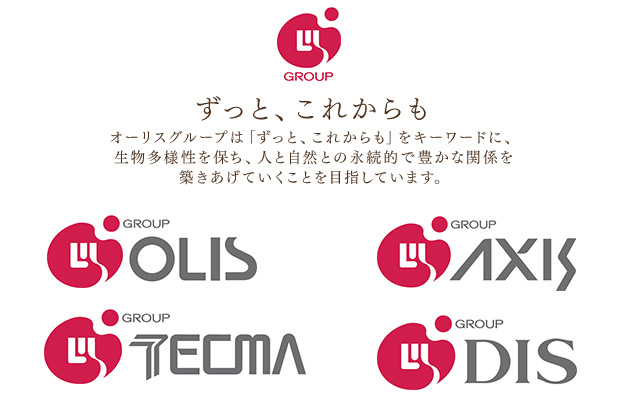
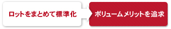
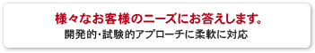
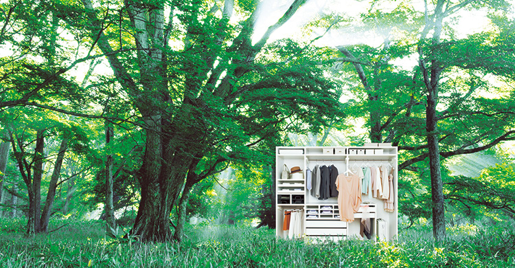
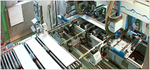
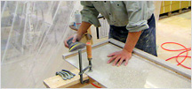
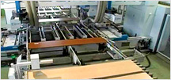

- TOP
- 会社概要・ショウルーム
companyアクシス株式会社の企業情報
オーダーメイドファニチャー「ce-fit（セフィット）」シリーズを製造・販売するアクシス株式会社の企業情報をご案内します。当社の会社概要、ショウルーム情報はこちらでご確認ください。また、アクシス株式会社をはじめ関連会社からなる「オーリスグループ」の経営理念などもこちらでご覧いただけます。
ce-fit（セフィット）で、心地よい住まいを叶えませんか
「可動間仕切収納」「スタイルシェルフ」「人工大理石カウンター」「空間活用収納」からなるce-fit（セフィット）シリーズは、お部屋にぴったり合うようミリ単位でお作りするオーダーメイドファニチャーです。ぜひ皆様もこのce-fit（セフィット）シリーズで、お部屋を美しく使いやすい収納で揃えてみませんか？
会社概要
| 会社名 | アクシス株式会社（オーリスグループ） |
|---|---|
| 所在地 | 〒550-0015 大阪府大阪市西区南堀江2-13-26 アクシスビル |
| 設立年月 | 1996年（平成8年）5月 |
| 代表取締役 | 彦坂 充宏 |
| 資本金 | 5,000万円 |
| 従業員数 | 23名（2019年6月現在） |
| 事業内容 |
|
| グループ会社 |
|
大阪ショウルーム
| 所在地 | 〒550-0015 大阪市西区南堀江2-13-26 アクシスビル |
|---|---|
| 営業時間 | 平日 9：00～18：00 （休業日：土・日・祝） ※完全予約制となります。 ※営業時間外・休業日にご来場ご希望の場合、TEL・E-mail・FAXでご連絡ください。 ※ご来場される際は事前にご予約ください。 ※金曜日17時までに届くようご連絡ください。 折り返しご連絡いたします。 |
| TEL | 06-6536-2030（平日9:00～18：00） |
| FAX | 06-4391-7102 |
| order@ce-fit.com |
ショウルーム内
アクセス
【地下鉄をご利用の場合】
- 大阪メトロ 四つ橋線「四ツ橋」6 番出口より徒歩7分
- 大阪メトロ 長堀鶴見緑地線「西大橋」3番出口より徒歩5分
- 大阪メトロ 千日前線「西長堀」6番出口より徒歩7分
- 大阪メトロ 千日前線「桜川」5番出口より徒歩8分
【阪神電車・JR・近鉄線をご利用の場合】
- 阪神なんば線「桜川」1番出口より徒歩9分
- JR・近鉄線「なんば」より徒歩10分
【お車の場合】
- 阪神高速環状線「湊町」出口より7分
（JRなんば駅南側が高速出口です）
※ビル1階に駐車場がございます。
東京ショウルーム
| 所在地 | 〒107-0062 東京都港区南青山2-23-8 外苑ビル3Ｆ |
|---|---|
| 営業時間 | 平日 9：00～18：00 （休業日：土・日・祝） ※完全予約制となります。 ※ご来場される際は事前にご予約ください。 ※営業時間外・休業日にご来場ご希望の場合、TEL・E-mail・FAXでご連絡ください。 ※金曜日17時までに届くようご連絡ください。 折り返しご連絡いたします。 |
| TEL | 03-3479-5100（平日9:00～18：00） |
| FAX | 03-3479-6200 |
| tokyo@ce-fit.com |
【地下鉄をご利用の場合】
- 東京メトロ 銀座線「外苑前」下車 1b番出口より徒歩3分
- 東京メトロ 各線「青山一丁目」5番出口より徒歩7分
- 都営大江戸線「青山一丁目」番出口より徒歩7分
- 東京メトロ 各線「表参道」A4番出口より徒歩12分
【お車の場合】
- 国道246号「外苑前」交差点より1分
※駐車場はございません。ご来場の際は近隣の有料駐車場をご利用ください。
アクセス
沿革・歴史
| 1996年（平成8年）5月 | 大阪市淀川区東三国に、アクシス株式会社を設立（資本金1,000万円） |
|---|---|
| 1999年（平成11年）3月 | 本社を大阪市西区南堀江に移転 |
| 2000年（平成12年）6月 | 住宅設備用金物の企画・開発・アセンブリ・販売を開始 |
| 2001年（平成13年）12月 | オリジナル内装ブランド ce-fit（セフィット）商品の企画・開発・販売を開始 |
| 2002年（平成14年）11月 | 人工大理石加工品の企画・開発・アセンブリ・販売を開始 |
| 2007年（平成19年）9月 | 資本金を5,000万円に増資 |
| 2011年（平成23年）1月 | 建設業 大阪府知事許可 取得 |
| 2011年（平成23年）6月 | 東京都港区南青山に青山サイト・東京ショウルームを開設 |
オーリスグループ

オーリス株式会社
| グループ本部・製造・OEM販売部門 西岡屋サイト・黒井サイト 設立 1990年11月2日（登記上） 【創業/仁川木工所：1946年11月27日】  |
アクシス株式会社
企画・開発・販売部門
 |
株式会社テクマ
グループ購買・材料供給部門
|
株式会社ディス
製造部門
|

MISSION（ミッション）
ずっと、これからも
おつきあいを続けていく未来のために、以下の3つのお約束を実現する企業活動を行います。
森との約束
お客様との約束
地域社会・従業員との約束
森を敬い、日本の誇りを受け継ぐモノづくり企業として、
地域社会、従業員との共存共栄を目指すことを約束します。
従業員との関係
日本のモノづくり企業としてのオーリスグループ
社内単位取得制度の実施や社内の業務とその役割、業務に必要な能力の取得方法を明確にし、従業員の能力・技術の向上を進めることで、従業員ならびに企業の価値向上を目指します。一定数以上の地元採用を続けることで地域の業務能力や技術力向上、その伝承に貢献します。
地域社会の貢献へ
地域社会との連携
環境方針に基づく行動を「見える化」して環境レポートを作成し、その取り組みを公開することで、地域環境保全への貢献を目指します。
地域行事などへの協賛や工場見学の受け入れを積極的に進め、地域活性化への貢献を目指します。
VISION（ビジョン）
オーリスグループは何を目指しているのか
「より満足度の高い快適さ」を感じ続けられる商品やサービスの創造を通じて、お客様の「喜び」と「幸せ」に貢献します。
環境方針
オーリスグループは、持続可能な社会と環境のために独自の「環境方針」を定め、OUTPUTを減らし、再利用・再資源化への活動に努めています。
購買方針
オーリスグループは、持続可能な社会と環境のために独自の「購買方針」を定め、自然環境や生態系の維持保全に配慮した調達活動に努めています。
品質方針
オーリスグループは、独自の「品質方針」を定め、より精度の高い快適性の提供と、
それをつづけることの大切さを中心価値として、現状調査（MIERU）に基づく改善活動を行う仕組みを構築しています。
労働方針
オーリスグループは、独自の「労働安全衛生方針」を定め、安全で快適な職場環境づくりと、そこで働く全従業員の健康の維持増進を推進しています。
VALUE（バリュー）
高性能な部材を組み合わせた製品を小ロットからご提供することで、各ハウスメーカー様のオリジナリティーを活かした開発的・試験的アプローチにも柔軟に対応いたします。アクシス株式会社は、お客様の挑戦をサポートすることで進化・深化を続けます。
高レベルの品質・性能

収納扉の指詰め防止設計や、ホルムアルデヒドやトルエンなどのシックハウス症候群を引き起こす物質を最小限にする技術開発を進め、安心して使用いただける商品を提供しています。
多様な保有技術

お客様のご要望にお応えするため、多様な技術を駆使しながら製品開発を行います。創業時から培われてきた技術は、進化していく新しい商品・サービスにつながっています。
小ロット対応

ライフスタイルやライフステージの変化に応じて、棚板を増やしたり、パイプやその他収納機能を追加したりするなど、購入後のカスタマイズにも対応できる仕組みを提案しています。
チャレンジ
業種にこだわらず、他の企業様に貢献できる商品・サービスを提供するとともに、今後、他の企業様との協同による新しい商品・サービスの開発にも力を入れていきます。